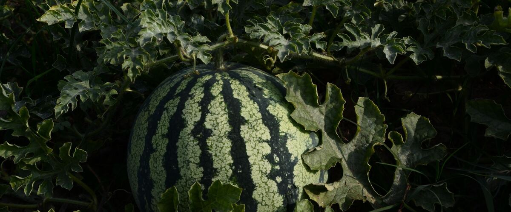

When to plant melons in Oregon and Washington
In Portland: Plant melons in the garden May 10–31, either as seeds or as young plants started indoors Apr 12–19. In Bend: Jun 9–30. Find your city below.
- Difficulty
- Tricky here
- Sun
- Full sun; the hottest spot you have
- Spacing
- 24 to 36 inches apart
- Planting depth
- 1 inch deep
- Frost
- Killed by frost
- First harvest
- About 85 days after planting
The toughest heat lover for west-side gardens: choose short-season varieties and use black plastic and row cover. Eastern valleys grow them easily.
Melons planting dates
| City | Start seeds indoors | Plant in the garden |
|---|---|---|
| Portland, OR | Apr 12–19 | May 10–31 |
| Seattle and Tacoma, WA | Apr 12–19 | May 10–31 |
| Eugene, OR | Apr 12–19 | May 10–31 |
| Spokane, WA | Apr 22–29 | May 20 – Jun 10 |
| Bend and Redmond, OR | May 12–19 | Jun 9–30 |
| Tri-Cities (Pasco, Kennewick, Richland), WA | Apr 3–10 | May 1–22 |
All 30 Oregon and Washington cities
| City | Start seeds indoors | Plant in the garden |
|---|---|---|
| Astoria, OR | Apr 22–29 | May 20 – Jun 10 |
| Baker City, OR | Apr 27 – May 4 | May 25 – Jun 15 |
| Bend and Redmond, OR | May 12–19 | Jun 9–30 |
| Burns, OR | May 14–21 | Jun 11 – Jul 2 |
| Coos Bay and North Bend, OR | Apr 22–29 | May 20 – Jun 10 |
| Eugene, OR | Apr 12–19 | May 10–31 |
| Gresham, OR | Apr 12–19 | May 10–31 |
| Klamath Falls, OR | May 12–19 | Jun 9–30 |
| Medford, OR | Apr 12–19 | May 10–31 |
| Pendleton, OR | Apr 3–10 | May 1–22 |
| Portland, OR | Apr 12–19 | May 10–31 |
| Roseburg, OR | Apr 12–19 | May 10–31 |
| Salem, OR | Apr 12–19 | May 10–31 |
| The Dalles, OR | Apr 3–10 | May 1–22 |
| Wilsonville and Canby, OR | Apr 12–19 | May 10–31 |
| Aberdeen and Hoquiam, WA | Apr 22–29 | May 20 – Jun 10 |
| Bellingham, WA | Apr 12–19 | May 10–31 |
| Ellensburg, WA | Apr 22–29 | May 20 – Jun 10 |
| Everett, WA | Apr 12–19 | May 10–31 |
| Forks, WA | Apr 22–29 | May 20 – Jun 10 |
| Moses Lake, WA | Apr 3–10 | May 1–22 |
| Olympia, WA | Apr 12–19 | May 10–31 |
| Omak and Okanogan, WA | Apr 22–29 | May 20 – Jun 10 |
| Seattle and Tacoma, WA | Apr 12–19 | May 10–31 |
| Spokane, WA | Apr 22–29 | May 20 – Jun 10 |
| Tri-Cities (Pasco, Kennewick, Richland), WA | Apr 3–10 | May 1–22 |
| Vancouver, WA | Apr 12–19 | May 10–31 |
| Walla Walla, WA | Apr 3–10 | May 1–22 |
| Wenatchee, WA | Apr 3–10 | May 1–22 |
| Yakima, WA | Apr 10–17 | May 8–29 |
How to grow melons
- Start seeds indoors on your city's dates in trays or small pots under a grow light or in your sunniest window. Or skip this step and buy young plants (starts) at a garden center.
- Harden off the young plants: about a week before planting, set them outside for a few hours a day, a little longer each day.
- Plant them in the garden on your city's dates, 24 to 36 inches apart. If you plant seeds instead, sow them 1 inch deep.
- Water deeply once or twice a week rather than a little every day, and mulch once the soil is warm.
- Harvest: Cantaloupes are ripe when the stem slips off with a gentle push. Watermelons are ready when the curly tendril nearest the fruit turns brown and dry.
Key numbers
- 75–95°FSoil to sprout
- 6.0–7.0Soil pH
- 1–2 inches a weekWater
- Cool soil and nightsBiggest risk
Growing notes
What makes the difference in Northwest gardens, in plain language.
Heat is everything
Melons come from hot climates, and their seeds rot rather than sprout in cold soil. Growth crawls whenever nights drop into the 50s, which is normal for June west of the Cascades. That's why black plastic mulch matters so much here: it warms the soil several degrees and keeps it warm overnight. Lay it a week or two before planting, then cover the plants with floating row cover.
Melon roots resent being disturbed, so if you start seeds indoors, use individual pots and transplant them young, before they get root-bound.
Flowers, bees and sweetness
Melons make male flowers first and female flowers, the ones with a tiny melon at the base, a week or so later. Bees have to carry pollen between them, so take the row cover off once female flowers open. Poorly pollinated fruit tends to be small or misshapen.
Sugar is made in the leaves, so healthy foliage means sweet fruit. Water deeply while vines grow and fruit swells, then ease off as melons near ripeness. Heavy watering at the end dilutes flavor and can split the fruit.
East vs west of the Cascades
Eastern valleys like the Yakima and Walla Walla areas have long, hot summers, and melons grow there with little fuss, including larger, longer-season varieties. West of the mountains, pick short-season varieties such as Sugar Baby, Minnesota Midget or Halona, and use every warming trick: the sunniest spot, black plastic, row cover, and a south-facing wall if you have one. Limit each vine to a few fruits so they ripen before cool September nights slow everything down.
Common questions about growing melons
Why aren't my homegrown melons sweet?
Usually the vines ran out of warm weather or healthy leaves before the fruit ripened. Picking too early, heavy watering near harvest and disease on the leaves also lower sugar. Short-season varieties, black plastic and fewer fruits per vine all help.
Can you grow watermelon in Portland or Seattle?
Yes, with small, early varieties like Sugar Baby and plenty of help from black plastic mulch and row cover. Expect a few modest fruits per plant rather than a big harvest, and expect better results in a hot summer than a cool one.
Why are my melon flowers falling off?
The first flowers are usually male, and they drop after a day or so by design. If female flowers (the ones with a tiny fruit behind them) also shrivel, they weren't pollinated. Remove row covers at bloom so bees can reach them.